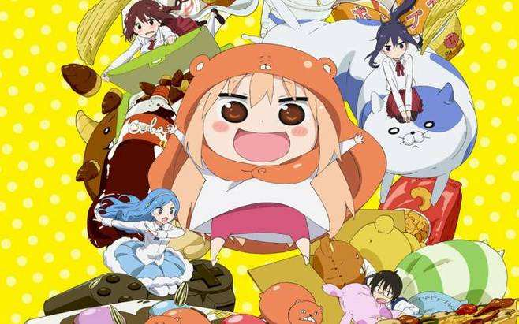
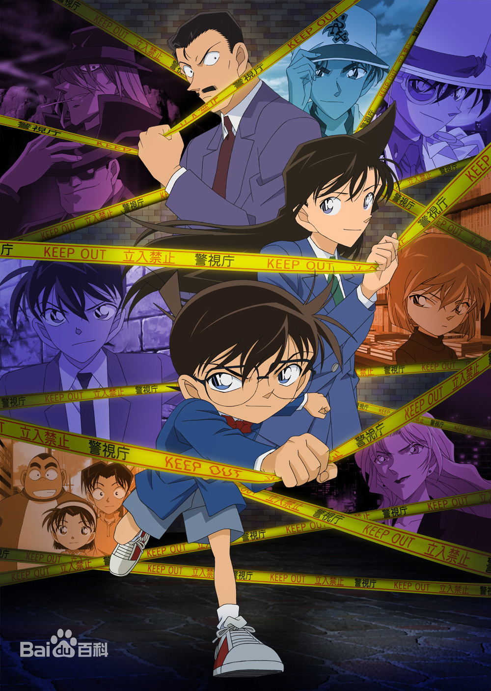

动漫推荐


| 动漫图片 | 动漫介绍 |
|---|---|
|  | 电视动画《干物妹！小埋》改编自日本漫画家三角头（サンカクヘッド）原作的同名漫画。动画化的消息在集英社的《周刊Young Jump》2015年第3号的封面发表，于2015年7月8日－2015年9月24日播出。此外，于2015年10月19日发售的原作漫画第7卷限定版同捆1话OVA。2017年4月18日发售的原作漫画第10卷同捆1话OVA。动画第二期《干物妹！小埋R》于2017年10月播出 |
| 《你的名字。》是由新海诚执导，由神木隆之介、上白石萌音担任主要配音的一部原创日本动画电影。作品于2016年8月26日在日本上映。中国内地于2016年12月2日上映。作品讲述了男女高中生在梦中相遇，并寻找彼此的故事。 故事发生的地点是在每千年回归一次的彗星造访过一个月之前，日本飞驒市的乡下小町糸守町。在这里女高中生三叶每天都过着忧郁的生活，而她烦恼的不光有担任町长的父亲所举行的选举运动，还有家传神社的古老习俗。在这个小小的町，周围都只是些爱瞎操心的老人。为此三叶对于大都市充满了憧憬。然而某一天，自己做了一个变成男孩子的梦。这里有着陌生的房间、陌生的朋友。而眼前出现的则是东京的街道。三叶虽然感到困惑，但是能够来到朝思暮想的都市生活，让她觉得神清气爽。另一方面在东京生活的男高中生立花泷也做了个奇怪的梦，他在一个从未去过的深山小町中，变成了女高中生。两人就这样在梦中邂逅了彼此。 |
|
|  | 《名侦探柯南》讲述了，高中生侦探工藤新一和青梅竹马的同学毛利兰一同去游乐园玩的时候，目击了黑衣男子的可疑交易现场。只顾偷看交易的工藤新一，却忽略了从背后接近的另一名同伙。他被那名男子灌下了毒药，当他醒来时，身体居然缩小了！如果让那些家伙知道工藤新一还活着的话，不仅性命难保，还会危及身边的人。在阿笠博士的建议下他决定隐瞒身份，在被小兰问及名字时，化名江户川柯南，为了搜集那些家伙的情报，寄住在父亲以侦探为业的小兰家中。谜团重重的黑衣组织……他所了解的，就只有他们是以酒的名称作为代号的。为了揭露那些家伙的真面目，小小侦探江户川柯南的活跃开始了！ |